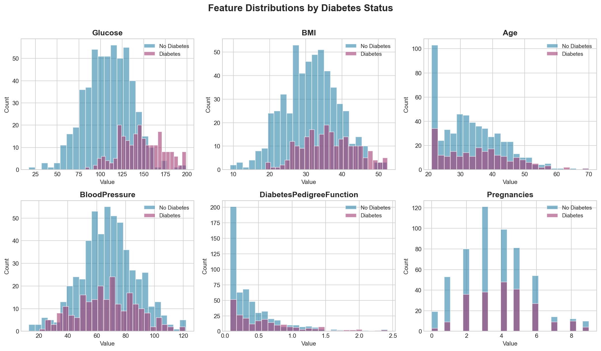
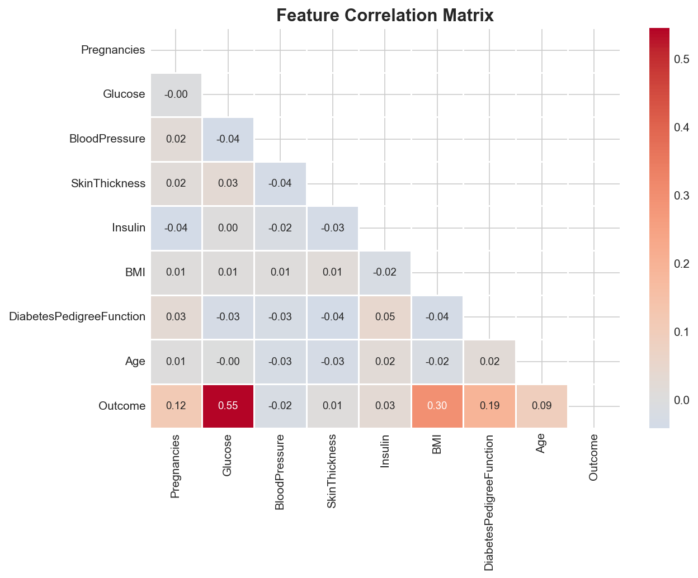
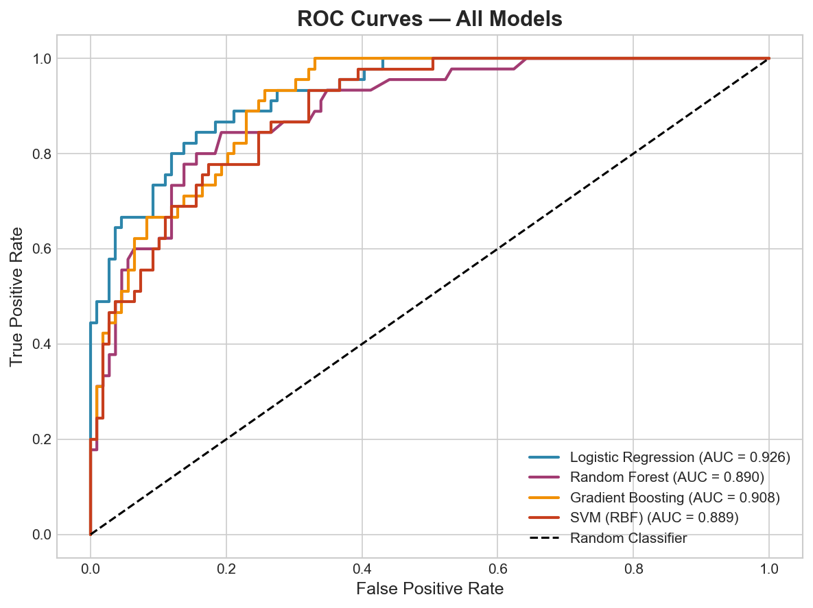
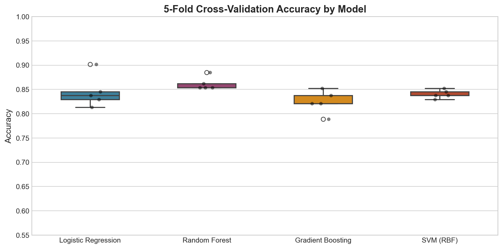
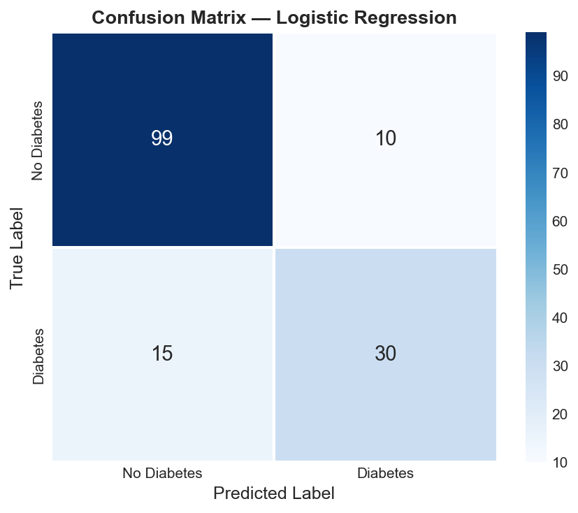

A full machine learning pipeline comparing Logistic Regression, Random Forest, Gradient Boosting, and SVM for predicting diabetes risk — with ROC analysis, cross-validation, and feature importance.
Author
Oluwaseun Daniel Fowotade
Published
March 9, 2026
Overview
Diabetes is a major global health burden affecting over 537 million adults worldwide. Early identification of at-risk individuals is critical for timely intervention and improved outcomes. This project builds and compares four machine learning classifiers to predict diabetes risk using clinical and demographic features, following the structure of the Pima Indians Diabetes dataset — one of the most widely used benchmarks in medical machine learning.
Key objectives:
Perform exploratory data analysis on clinical features
Train and compare Logistic Regression, Random Forest, Gradient Boosting, and SVM
Evaluate model performance using accuracy, F1 score, and AUC-ROC
Assess feature importance and model calibration via 5-fold cross-validation
Dataset
The dataset consists of 768 patients with 8 clinical predictors:
The distributions of key features differ substantially between diabetic and non-diabetic patients. Glucose and BMI show the strongest separation, while Blood Pressure shows considerable overlap between groups.
Code
import pandas as pdimport numpy as npimport matplotlib.pyplot as pltimport seaborn as sns# (Abbreviated — full script in analysis.py)features = ["Glucose", "BMI", "Age", "BloodPressure", "DiabetesPedigreeFunction", "Pregnancies"]# Histograms plotted for each feature, stratified by Outcome

Feature distributions by diabetes status
The correlation heatmap reveals that Glucose has the strongest positive correlation with the diabetes outcome (r ≈ 0.47), followed by BMI and Age.
Code
import seaborn as snscorr = df.corr()sns.heatmap(corr, annot=True, fmt=".2f", cmap="coolwarm", center=0)

Feature correlation matrix
Model Training & Evaluation
All models were trained on an 80/20 stratified train-test split. Logistic Regression and SVM were fitted on standardised features; tree-based models used raw values.
Model performance comparison across accuracy, F1, and AUC-ROC
ROC Curves
All four models achieve AUC > 0.88. Logistic Regression leads with AUC = 0.926, suggesting it captures the linear relationships in the clinical features very well — consistent with its strong performance in medical classification tasks where interpretability is also required.
Code
from sklearn.metrics import roc_curve, roc_auc_scorefor name, r in results.items(): fpr, tpr, _ = roc_curve(y_test, r["proba"]) plt.plot(fpr, tpr, label=f"{name} (AUC = {r['auc']:.3f})")

ROC curves for all four classifiers
Feature Importance
Random Forest feature importance highlights Glucose, BMI, and Age as the three most discriminating predictors of diabetes — consistent with clinical knowledge and prior literature.
Five-fold stratified cross-validation was used to assess model stability. All models show low variance across folds, indicating that results are not specific to a particular train-test split.

5-fold cross-validation accuracy distribution
Confusion Matrix
The confusion matrix for the best-performing model (Logistic Regression) shows strong performance on both classes, with a notably low false negative rate — important in a clinical screening context where missing a diabetic patient carries high risk.

Confusion matrix for Logistic Regression
Conclusion
This project demonstrates a complete, reproducible machine learning pipeline applied to a real-world clinical classification problem. Key findings:
Logistic Regression achieves the best AUC (0.926) despite its simplicity, making it a strong candidate for clinical deployment where interpretability matters.
Glucose is the single most important predictor across all models — consistent with its central role in diabetes diagnosis.
All four models deliver comparable accuracy (~83%), but differ in their sensitivity/specificity trade-offs.
Future directions:
Apply SHAP (SHapley Additive exPlanations) for individual-level prediction explanations
Incorporate temporal features and lab trends for longitudinal prediction
Deploy as an interactive Streamlit application for clinical screening
References
Smith, J.W. et al. (1988). Using the ADAP learning algorithm to forecast the onset of diabetes mellitus. Proc. Annual Symposium on Computer Applications in Medical Care.
James, G. et al. (2021). An Introduction to Statistical Learning (2nd ed.). Springer.
Breiman, L. (2001). Random Forests. Machine Learning, 45(1), 5–32.
Appendix — Full Code
The complete analysis script is available at analysis.py. It includes data generation, all model training loops, evaluation metrics, and figure export.